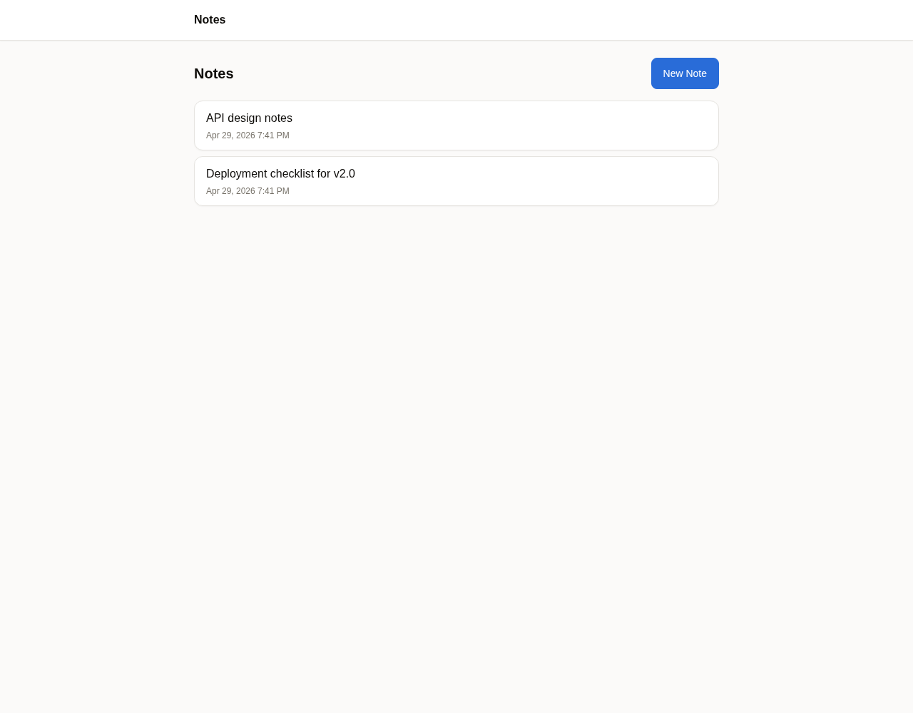
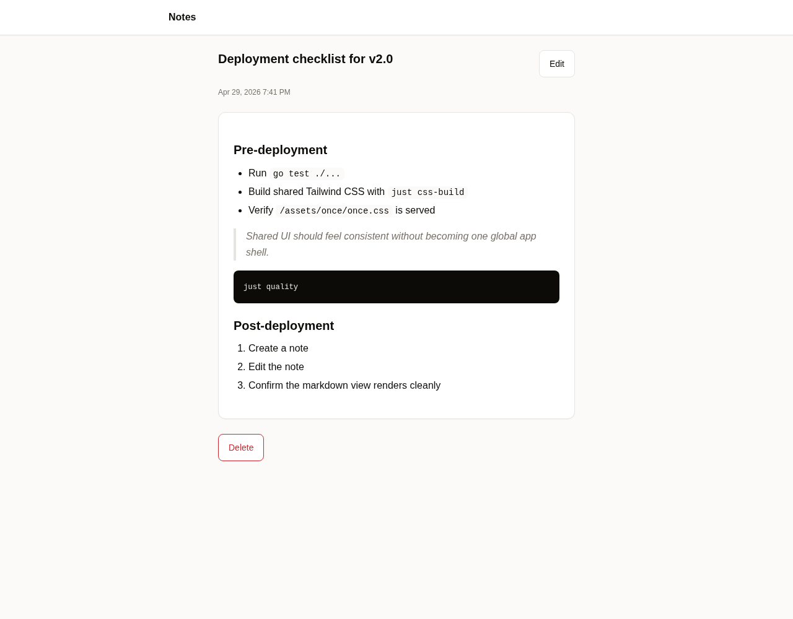
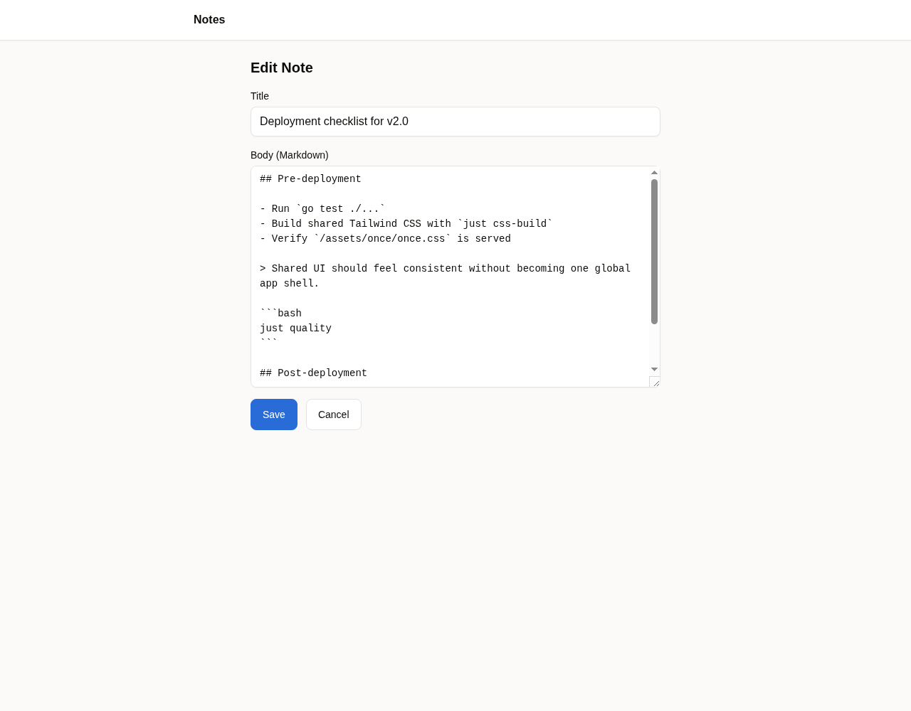
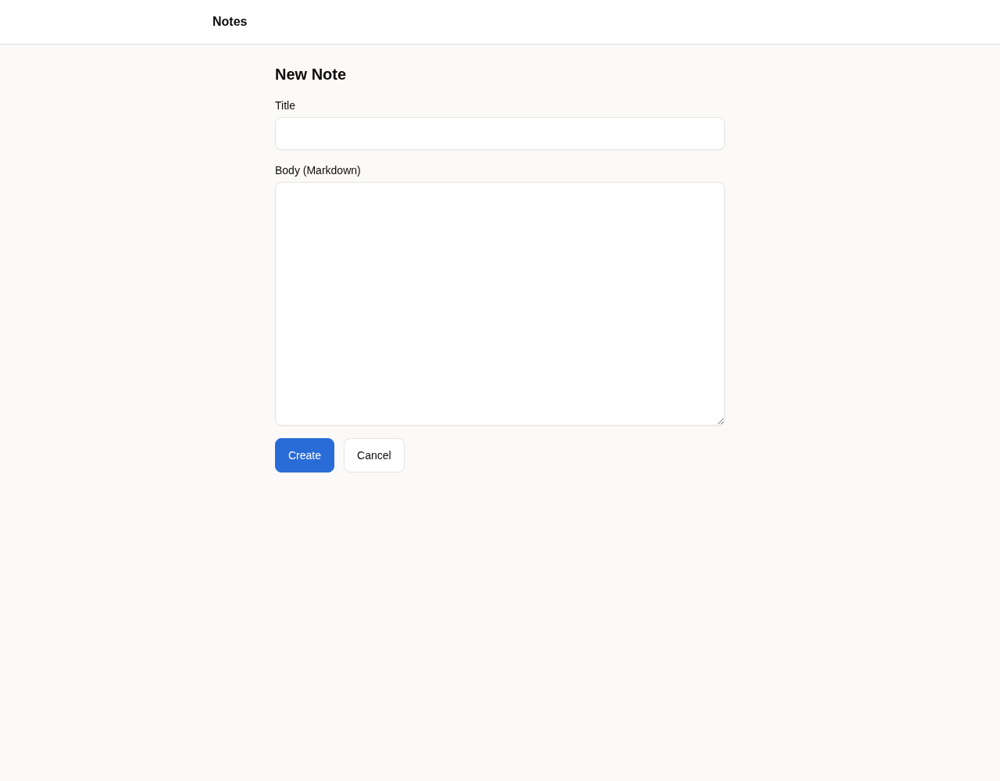
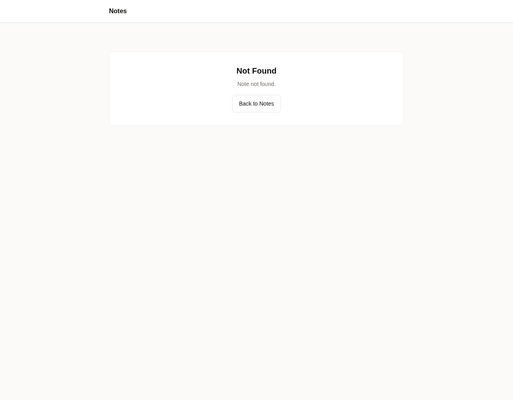

1. Notes list
Shows shared app header, warm background, centered content width, cards, and shared primary button styling.

This report was generated by running the Notes app locally, creating sample notes through the real HTTP routes, capturing Chromium screenshots, and checking the rendered HTML/CSS output.
/assets/once/once.css.once-card, once-btn, and once-prose.go test ./... PORT=18080 STORAGE_DIR=$(mktemp -d) go run ./cmd/notes curl -X POST /notes ... chromium --headless --screenshot=...
pkg/notes/handlers.go mounts ui.AssetsHandler() at GET /assets/once/.pkg/notes/templates.go creates a ui.Renderer with ui.App{Name: "Notes", BaseURL: "/"}.base.html and Tailwind CDN script were removed from Notes templates.pkg/ui/static/once.css includes shared component classes and Option A theme tokens.Note: UI-007 is still planned, so some page title strings may still include app-name text from the old data model. The visual migration and shared renderer integration are in place.
Shows shared app header, warm background, centered content width, cards, and shared primary button styling.

Shows rendered markdown using the shared once-prose styling, including lists, blockquote, code, and document card.

Shows shared form controls: labels, inputs, textarea, primary save action, and secondary cancel action.

Shows the create form using the same shared layout and component classes.

Shows a migrated error page in the shared layout rather than the old local Tailwind CDN base.
